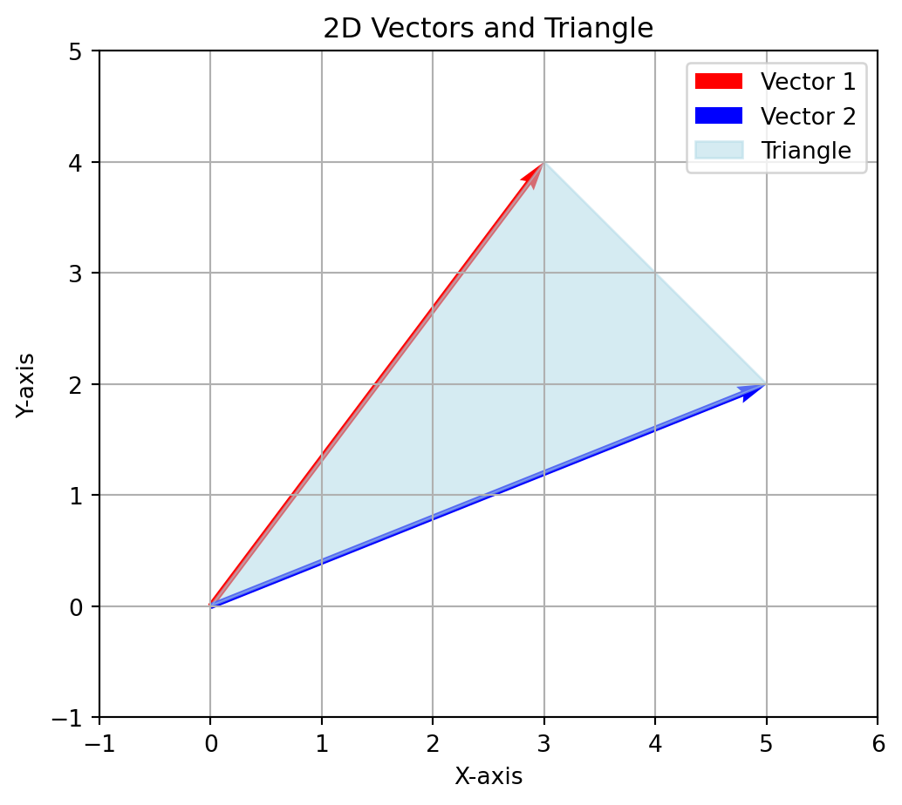
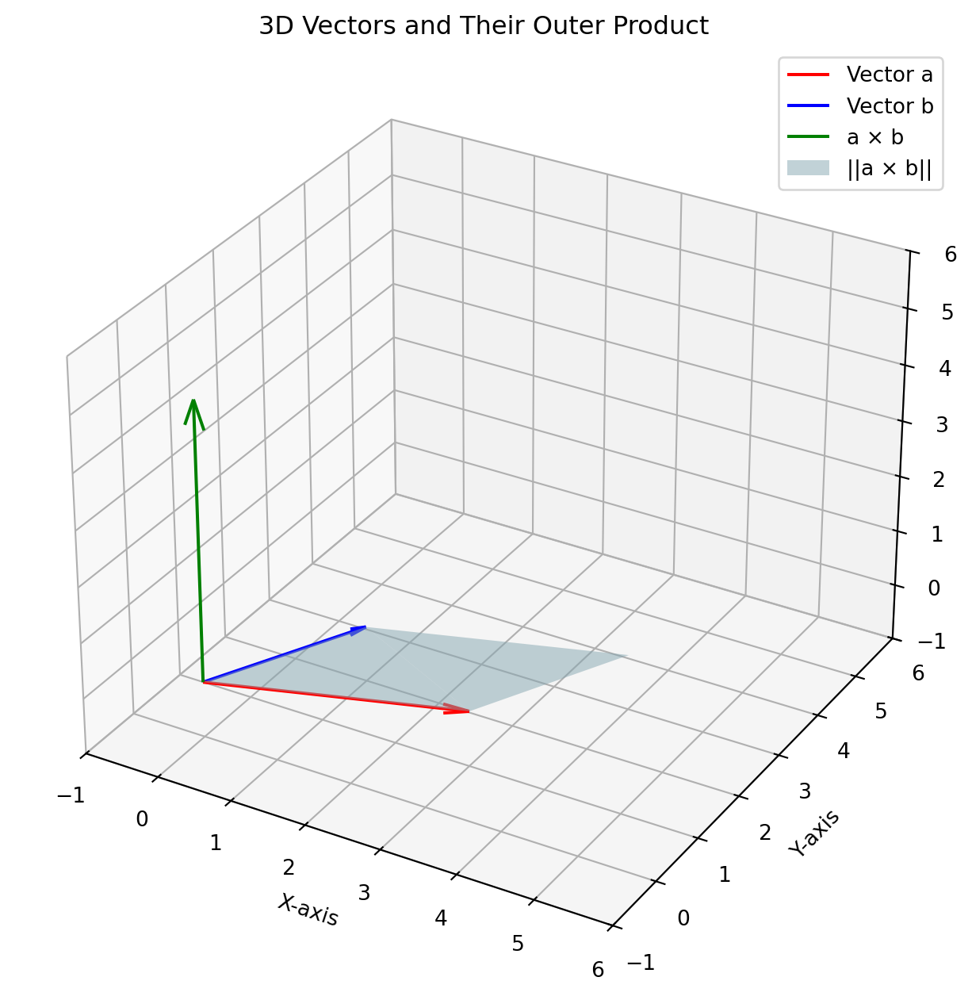

▶ Key Takeaways
- ３次元空間特有のベクトルの積として外積がある
ベクトルの外積
Definition 1 : 外積
３次元実数空間のベクトル
\[ \begin{align} \pmb a = (a_1, a_2, a_3)\\ \pmb b = (b_1, b_2, b_3) \end{align} \]
に対して，
\[ \left(\begin{vmatrix} a_2 & a_3\\ b_2 & b_3 \end{vmatrix}, - \begin{vmatrix} a_1 & a_3\\ b_1 & b_3 \end{vmatrix}, \begin{vmatrix} a_1 & a_2\\ b_1 & b_2 \end{vmatrix} \right) \]
を \(\pmb a\) と \(\pmb b\) の外積またはベクトル積 といい，\(\pmb a \times \pmb b\) と表す．
3次元実ベクトル空間 \(\mathbb R^3\) の標準基低
\[ \pmb e_1 = (1, 0, 0), \pmb e_2 = (0, 1, 0), \pmb e_3 = (0, 0, 1) \]
を用いて表現すると
\[ \pmb a \times \pmb b = \begin{vmatrix} a_2 & a_3\\ b_2 & b_3 \end{vmatrix}\pmb e_1 - \begin{vmatrix} a_1 & a_3\\ b_1 & b_3 \end{vmatrix}\pmb e_2 + \begin{vmatrix} a_1 & a_2\\ b_1 & b_2 \end{vmatrix}\pmb e_3 \]
と表現することもできます．この式を直感的に理解するとすると
\[ \begin{vmatrix} \pmb e_1& \pmb e_2 & \pmb e_3\\ a_1& a_2 & a_3\\ b_1& b_2 & b_3 \end{vmatrix} \]
と対応すると考えることもできます．
Property: 外積の性質
外積について次の法則が成り立つ
\[ \begin{align} &\pmb a \times \pmb b = -\pmb b\times \pmb a\\ &(\lambda\pmb a) \times \pmb b = \pmb a \times (\lambda \pmb b ) = \lambda (\pmb a \times \pmb b )\\ &\pmb a \times (\pmb b + \pmb c) = \pmb a \times \pmb b + \pmb a \times \pmb c\\ &\pmb a \times \pmb a = \pmb 0 \end{align} \]
Example 1
\(\mathbb R^3\) の標準基底 \(\pmb e_1, \pmb e_2, \pmb e_3\) に関して
\[ \begin{align} \pmb e_1 \times \pmb e_2 &= \left(\begin{vmatrix} 0 & 0\\ 1 & 0 \end{vmatrix}, -\begin{vmatrix} 1 & 0\\ 0 & 0 \end{vmatrix}, \begin{vmatrix} 1 & 0 \\ 0 & 1 \end{vmatrix} \right)\\ &= \pmb e_3 \end{align} \]
\[ \begin{align} \pmb e_2 \times \pmb e_3 &= \left(\begin{vmatrix} 1 & 0\\ 0 & 1 \end{vmatrix}, -\begin{vmatrix} 0 & 0\\ 0 & 1 \end{vmatrix}, \begin{vmatrix} 0 & 1 \\ 0 & 0 \end{vmatrix} \right)\\ &= \pmb e_1 \end{align} \]
\[ \begin{align} \pmb e_3 \times \pmb e_1 &= \left(\begin{vmatrix} 0 & 1\\ 0 & 0 \end{vmatrix}, -\begin{vmatrix} 0 & 1\\ 1 & 0 \end{vmatrix}, \begin{vmatrix} 0 & 0 \\ 1 & 0 \end{vmatrix} \right)\\ &= \pmb e_2 \end{align} \]
▶ 内積と外積を組み合わせた性質
Theorem 1
３つのベクトル \(\pmb a = (a_1, a_2, a_3), \pmb b = (b_1, b_2, b_3), \pmb c = (c_1, c_2, c_3)\) について，
\[ (\pmb a\times \pmb b, \pmb c) = (\pmb a, \pmb b \times \pmb c) = \begin{vmatrix} a_1 & a_2 & a_3\\ b_1 & b_2 & b_3\\ c_1 & c_2 & c_3 \end{vmatrix} \]
外積の幾何学的性質
Theorem 2
３次元実ベクトル \(\pmb a, \pmb b\) の外積の大きさは
\[ ||\pmb a\times \pmb b|| = ||\pmb a||\,||\pmb b||\sin \theta \]
ここで， \(\theta\) は \(\pmb a, \pmb b\) のなす角であるとする
▶ Key Takeaways
- 上記の定理は２つの３次現実ベクトルの外積のノルムは，２つの３次現実ベクトルが成す平行四辺形の面積と等しいことを意味している
- 外積を \(\displaystyle\frac{1}{2}\) 倍すると，２つの３次現実ベクトルが成す三角形の面積となります．
Example 2
\[ \begin{align} \pmb a &= (3, 4)\\ \pmb b &= (5, 2) \end{align} \]
と二次元ベクトルが与えられているとします．この２つのベクトルがなす三角形の面積は外積を応用すると以下のように計算できるはずです
\[ \begin{align} \triangle ABO &= \frac{1}{2}\sqrt{(0, 0, 3\times 2 - (4 \times 5))(0, 0, 3\times 2 - (4 \times 5))^T}\\ &= 7 \end{align} \]
- 上では二次元ベクトル \((x, y)\) を \((x, y, 0)\) とみなして計算しています
- ただし，これは外積の説明というよりかは \(2\) 次正方行列の行列式がなぜ面積と対応するのかのほうが適切かも
実際に Pythonで計算してみると
Code
import matplotlib.pyplot as plt
import numpy as np
# Define the two vectors
vector1 = np.array([3, 4]) # Vector 1 (x, y)
vector2 = np.array([5, 2]) # Vector 2 (x, y)
# Define the origin
origin = [0, 0]
# Create the plot
fig, ax = plt.subplots(figsize=(6, 6))
# Plot the vectors
ax.quiver(*origin, vector1[0], vector1[1], angles='xy', scale_units='xy', scale=1, color='r', label='Vector 1')
ax.quiver(*origin, vector2[0], vector2[1], angles='xy', scale_units='xy', scale=1, color='b', label='Vector 2')
# Plot the triangle
triangle_x = [0, vector1[0], vector2[0], 0]
triangle_y = [0, vector1[1], vector2[1], 0]
ax.fill(triangle_x, triangle_y, color='lightblue', alpha=0.5, label='Triangle')
# Set plot limits
ax.set_xlim(-1, max(vector1[0], vector2[0]) + 1)
ax.set_ylim(-1, max(vector1[1], vector2[1]) + 1)
# Add grid, labels, and legend
ax.grid()
ax.set_aspect('equal')
ax.set_xlabel('X-axis')
ax.set_ylabel('Y-axis')
ax.legend()
# Add title
ax.set_title('2D Vectors and Triangle')
# Show the plot
plt.show()Code
## compute area
from shapely import Polygon
coords = (origin, vector1, vector2)
polygon = Polygon(coords)
print(f"Area of triangle: {polygon.area}")Area of triangle: 7.0外積の直交性
Theorem 3
２つの２次元実ベクトル \(\pmb a, \pmb b\) について
\[ (\pmb a\times \pmb b, \pmb a) = (\pmb a\times \pmb b, \pmb b) = 0 \]
つまり，
\[ \begin{align} \pmb a\times \pmb b \perp \pmb a\\ \pmb a\times \pmb b \perp \pmb a \end{align} \]
▶ Key Takeaways
- \(\pmb a\times \pmb b\) のベクトルの方向は，\(\pmb a\) から \(\pmb b\) へ回転するときの右ねじが進む方向に対応すると言われる
Code
import numpy as np
import matplotlib.pyplot as plt
from mpl_toolkits.mplot3d import Axes3D
# Define the vectors
a = np.array([3, 1, 0]) # Vector b
b = np.array([1, 2, 0]) # Vector a
# Compute the outer product (cross product)
outer_product = np.cross(a, b)
# Create a 3D plot
fig = plt.figure(figsize=(8, 8))
ax = fig.add_subplot(111, projection='3d')
# Plot vector a
ax.quiver(0, 0, 0, a[0], a[1], a[2], color='r', label='Vector a', arrow_length_ratio=0.1)
# Plot vector b
ax.quiver(0, 0, 0, b[0], b[1], b[2], color='b', label='Vector b', arrow_length_ratio=0.1)
# Plot the outer product vector
ax.quiver(0, 0, 0, outer_product[0], outer_product[1], outer_product[2], color='g', label='a × b', arrow_length_ratio=0.1)
# Plot the square
parallelogram_x = [0, a[0], a[0] + b[0], b[0], 0]
parallelogram_y = [0, a[1], a[1] + b[1], b[1], 0]
parallelogram_z = [0, a[2], a[2] + b[2], b[2], 0]
ax.plot_trisurf(parallelogram_x, parallelogram_y, parallelogram_z, color='lightblue', alpha=0.5, label='||a × b||')
# Set plot limits
max_range = max(np.linalg.norm(a), np.linalg.norm(b), np.linalg.norm(outer_product)) + 1
ax.set_xlim([-1, 6])
ax.set_ylim([-1, 6])
ax.set_zlim([-1, 6])
# Add labels and legend
ax.set_xlabel('X-axis')
ax.set_ylabel('Y-axis')
ax.set_zlabel('Z-axis')
ax.legend()
# Add title
ax.set_title('3D Vectors and Their Outer Product')
# Tilt the plot
ax.view_init(elev=30, azim=-60)
# Show the plot
plt.show()
Appendix
Lemma 1
第 \(i\) 行が，２つの行ベクトルの和である行列の行列式は，他の行は同じで第 \(i\) 行は各々のベクトルをとった行列の行列式となる．すなわち，
\[ \left| \begin{array}{ccc} a_{11} & \cdots & a_{1n} \\ \vdots & & \vdots \\ b_{i1} + c_{i1} & \cdots & b_{in} + c_{in} \\ \vdots & & \vdots \\ a_{n1} & \cdots & a_{nn} \end{array} \right| = \left| \begin{array}{ccc} a_{11} & \cdots & a_{1n} \\ \vdots & & \vdots \\ b_{i1} & \cdots & b_{in}\\ \vdots & & \vdots \\ a_{n1} & \cdots & a_{nn} \end{array} \right| + \left| \begin{array}{ccc} a_{11} & \cdots & a_{1n} \\ \vdots & & \vdots \\ c_{i1} & \cdots & c_{in} \\ \vdots & & \vdots \\ a_{n1} & \cdots & a_{nn} \end{array} \right| \]
Lemma 1 より以下もわかります
\[ \left| \begin{array}{ccc} a_{11} & \cdots & a_{1n} \\ \vdots & & \vdots \\ \lambda a_{i1} & \cdots & \lambda a_{in} \\ \vdots & & \vdots \\ a_{n1} & \cdots & a_{nn} \end{array} \right| = \lambda \left| \begin{array}{ccc} a_{11} & \cdots & a_{1n} \\ \vdots & & \vdots \\ a_{i1} & \cdots & a_{in} \\ \vdots & & \vdots \\ a_{n1} & \cdots & a_{nn} \end{array} \right|\label{#eq-determinant-linear} \]
余因子と行列式
Definition 2 : 余因子(cofactor)
\(n\) 次の正方行列 \(A = (a_{ij})\) から，その第 \(i\) 行と第 \(j\) 列を取り除いて得られる \((n-1)\) 次の正方行列を \(A_{ij}\) と表記するとします． このとき \(a_{ij}\) の余因子 \(\tilde{a}_{ij}\) は以下のように定義される
\[ \tilde{a}_{ij} = (-1)^{i+j}|A_{ij}| \]
または
\[ \tilde{a}_{ij} = (-1)^{i+j} \left| \begin{array}{cccccc} a_{11} & \cdots & a_{1(j-1)} & a_{1(j+1)} & \cdots & a_{1n} \\ \vdots & & \vdots & \vdots & & \vdots \\ a_{(i-1)1} & \cdots & \cdots & \cdots & \cdots & a_{(i-1)n} \\ a_{(i+1)1} & \cdots & \cdots & \cdots & \cdots & a_{(i+1)n} \\ \vdots & & \vdots & \vdots & & \vdots \\ a_{n1} & \cdots & a_{n(j-1)} & a_{n(j+1)} & \cdots & a_{nn} \end{array} \right| \]
Example 3
\[r A = \left(\begin{array}{ccc} 1 & 2 & 0\\ 3 & 5 & -1\\ 4 & 6 & 7 \end{array}\right) \]
について，\(\tilde{a}_{11}, \tilde{a}_{12}, \tilde{a}_{13}\) はそれぞれ以下のように計算されます
\[ \begin{align} \tilde{a}_{11} &= (-1)^2 \left(\begin{vmatrix}5 & -1\\6&7\end{vmatrix}\right) = 41\\ \tilde{a}_{12} &= (-1)^3 \left(\begin{vmatrix}3 & -1\\4&7\end{vmatrix}\right) = -25\\ \tilde{a}_{13} &= (-1)^4 \left(\begin{vmatrix}3 & 5\\4&6\end{vmatrix}\right) = -2 \end{align} \]
Theorem 4 : 行列式の展開
\[ a_{i1}\tilde a_{i1} + a_{i2}\tilde a_{i2} + \cdots + a_{in}\tilde a_{in} = |A| \]